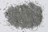

|
DOCUMENTATION_FORMAT: MINERAL
SAMPLE_ID: GDS4, GDS4.2
MINERAL_TYPE: Phyllosilicate
MINERAL: Illite, a group of hydrated mica-clay minerals
FORMULA: (K,H3O)(Al,Mg,Fe)2(Si,Al)4O10[(OH)2,H2O]
FORMULA_HTML: (K,H3O)(Al,Mg,Fe)2(Si,Al)4O10[(OH)2,H2O]
COLLECTION_LOCALITY: Marble Head, WS
ORIGINAL_DONOR: Jim Crowley, USGS
CURRENT_SAMPLE_LOCATION: USGS Denver Spectroscopy Laboratory
ULTIMATE_SAMPLE_LOCATION: USGS Denver Spectroscopy Laboratory
SAMPLE_DESCRIPTION:
A spectrum of this sample was published by:
Clark, R.N., T.V.V. King, M. Klejwa, G. Swayze, and N. Vergo, 1990, High spectral resolution reflectance spectroscopy of minerals: J. Geophys Res. 12653-12680.
who noted that the sample was darker than normal due to carbonaceous impurities, but was otherwise spectrally pure.
Sample GDS4.2 was ground to a finer grain size.
IMAGE_OF_SAMPLE:

END_SAMPLE_DESCRIPTION.
XRD_ANALYSIS:
Analysis by Norma Vergo indicates that the sample is illite/smectite: 80% illite layers, R3 ordered, with trace amounts of feldspar. The less than 2µm separate is illite + illite/smectite.
END_XRD_ANALYSIS.
COMPOSITIONAL_ANALYSIS_TYPE: XRF # XRF, EPMA, ICP(Trace), WChem
| COMPOSITION KEYWORD |
Oxide ASCII |
Amount | Weight Percent, % |
Oxide html |
|---|---|---|---|---|
| COMPOSITION: | SiO2 | 51.62 | wt% | SiO2 |
| COMPOSITION: | TiO2 | 0.92 | wt% | TiO2 |
| COMPOSITION: | Al2O3 | 23.96 | wt% | Al2O3 |
| COMPOSITION: | Fe2O3 | 1.63 | wt% | Fe2O3 |
| COMPOSITION: | FeO | 0.29 | wt% | FeO |
| COMPOSITION: | MnO | 0.01 | wt% | MnO |
| COMPOSITION: | MgO | 3.83 | wt% | MgO |
| COMPOSITION: | SrO | 0.74 | wt% | SrO |
| COMPOSITION: | CaO | 0.47 | wt% | CaO |
| COMPOSITION: | Na2O | 0.14 | wt% | Na2O |
| COMPOSITION: | K2O | 8.12 | wt% | K2O |
| COMPOSITION: | P2O5 | 0.09 | wt% | P2O5 |
| COMPOSITION: | H2O+ | 5.00 | wt% | H2O+ |
| COMPOSITION: | H2O- | 2.90 | wt% | H2O- |
| COMPOSITION: | LOI | 6.91 | wt% | LOI |
| COMPOSITION: | Total | 99.41 | wt% | |
| COMPOSITION: | O=Cl,F,S | wt% | #correction for Cl, F, S | |
| COMPOSITION: | New Total | wt% |
COMPOSITION_TRACE:
COMPOSITION_DISCUSSION:
EM analysis by Gregg A. Swayze at the Branch of Geophysics, USGS, Denver.
END_COMPOSITION_DISCUSSION.
MICROSCOPIC_EXAMINATION:
Sample not available.
END_MICROSCOPIC_EXAMINATION.
SPECTROSCOPIC_DISCUSSION:
END_SPECTROSCOPIC_DISCUSSION.
SPECTRAL_PURITY: 1b2b3b4_ # Illite GDS4 # 1= 0.2-3, 2= 1.5-6, 3= 6-25, 4= 20-150 microns
SPECTRAL_PURITY: 1b2_3_4_ # Illite GDS4.2 # 1= 0.2-3, 2= 1.5-6, 3= 6-25, 4= 20-150 microns
{kind=link}